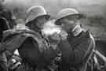

Michael is the author of Staying Married in a Degenerate Age. Follow him on Twitter or Facebook. You can read more of his writing at Honor and Daring.


It was the first Christmas of World War I. German and British troops had already been dug into the trenches of the Western Front for five months when something of a miracle occurred. Men on both sides spontaneously stopped fighting and ventured out to the middle of the battlefield to greet each other as brothers.
That event, which we now call the Christmas Truce of 1914, gives us a glimpse into what Western civilization was like before the last vestiges of Christendom were snuffed out. And it also points the way forward for those of us who are not satisfied to just enjoy the decline.

Leading up to Christmas, 1914, there were several calls for a truce between the warring factions. In December, Pope Benedict XV, who had only been elected to the papacy three months before, called for a truce “that the guns may fall silent at least upon the night the angels sang.” His request was officially rejected, but the idea of a Christmas truce started to be discussed in Europe’s newspapers.
The Christmas Truce happened spontaneously. On Christmas Eve, German soldiers decorated their trenches with candles and even set up Christmas trees in celebration of Christmas. The Germans then began singing Christmas carols. The English, seeing the displays and hearing the carols, responded by singing carols of their own.
On Christmas day, the Germans the two sides started to shout Christmas greetings to each other. The guns then went silent and men from both sides left their trenches to meet in the bullet-riddled “no man’s land” in between. The Germans and the English combatants met each other as brothers. They shook hands and exchanged food and souvenirs. English soldier Bruce Bairnsfather described the degree of camaraderie:
I wouldn’t have missed that unique and weird Christmas Day for anything… I spotted a German officer, some sort of lieutenant I should think, and being a bit of a collector, I intimated to him that I had taken a fancy to some of his buttons… I brought out my wire clippers and, with a few deft snips, removed a couple of his buttons and put them in my pocket. I then gave him two of mine in exchange… The last I saw was one of my machine gunners, who was a bit of an amateur hairdresser in civil life, cutting the unnaturally long hair of a docile Boche, who was patiently kneeling on the ground whilst the automatic clippers crept up the back of his neck.
The truce did not last long. By the next day, the killing had started again. But for a brief moment, these men lived out true Christian brotherhood in spite of their leaders.
Czar Nicholas of Russia
The Christmas Truce probably could not happen today. Our enforced diversity, which is supposed to bring everyone together, has the opposite effect. It creates an atmosphere of mistrust where no one feels connected to anyone else. We are all atomized economic units.
World War I was in many ways the birth of our modern world. It washed away what remained of the old order, with its patriarchy and hierarchy, and set the stage for feminized, egalitarian society.
The war decimated the nobility of the European nations. The nobles assumed their traditional role as warriors to protect their nation, but suffered heavy losses as a result. In this way, Europe lost many of its best and brightest young men.
The Great War put an end to several monarchies. Notably, Czar Nicholas of Russia, Kaiser Wilhelm of Germany, and Emperor Karl of Austria lost their crowns as a result of the war. This was an important development for several reasons.
The first is that monarchy in the West is bound up closely to Christianity. Kings are crowned by bishops and they are expected to live in obedience to the gospel. The monarchs of the past saw it as their duty to propagate Christianity within their own realm ensuring that the people had strong morals.
The connection between monarch and Christianity is still evident even today, although to a greatly diminished degree. Queen Elizabeth of England is set to give the “most Christian” Christmas address that she has ever delivered this year to reiterate the importance of faith in England’s heritage. Thus it is not surprising that faith in Christ began to decline in Europe after the monarchies were abolished.
The second way that the end of monarchy is important has to do with attitudes towards war. The best monarchs viewed themselves as the fathers of their nations. Therefore, sending their people into war was not a decision that they took lightly. Emperor Karl wrote to his wife, “I am an officer with all my body and soul, but I do not see how anyone who sees his dearest relations leaving for the front can love war.”
Compare this to the modern view of our politicians who think nothing of putting their citizens in harm’s way for dubious wars—and even hobbling the military’s ability to effectively fight back with unreasonable rules of engagement.
In the Christmas Truce, the German and English soldiers realized that what they held in common was more important than the artificial political distinctions that were imposed from above.
Although we are not in a shooting war, we’ve been placed in a similar position. We are engaged in a culture war where the patrimony of Western culture is being reduced to free trade and sexual license.
Our cultural elites tell us that we are allies with certain groups that are identified as the good guys: feminists, degenerate celebrities, pushers of pedophile acceptance, Saudi princes who force their non-Muslim staff to strip naked, countries that support the Islamic State, and Islamic “refugees” who rape the women of their host nation.
Meanwhile, we are told that our enemies, the bad guys, are Christians, political candidates who want to have borders, masculine men, gun owners, supporters of patriarchy, secular Arab leaders who protect their minority Christian populations, and a certain Russian leader.

The Christmas Truce means that we should unplug from the diktats of our elites. Instead, associate with those people with whom you have the most in common, even if they are on the official “enemies” list. These people are your true allies. There are some tangible ways you can support your true allies:
Finally, vote with your pocketbook. The cultural Marxists own the media and the large corporations. They are the well-funded Goliath. The people who are promoting a return to patriarchy, on the other hand, are the less powerful Davids. Therefore:
The Christmas Truce took place in a world that is now long dead. The civility, honor, and trust that made it possible have been replaced by the cult of excessive consumption. But it doesn’t need to be that way. This Christmas is a good time to renew our efforts to restore what was lost.
Read More: A ROK Christmas Benediction From Brother Cui Pertinebit